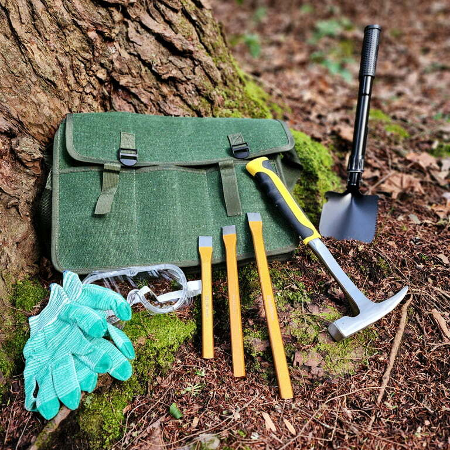

No results found.

Step-by-Step Guide to Cleaning Raw Crystals at Home
Explore a simple step-by-step guide to cleaning different raw crystals at home. From choosing the right tools and materials to cleaning techniques, this comprehensive article provides detailed insights into effective crystal cleaning techniques and maintenance.
Date: June 18, 2024
Read More

Opal Hotspots: The Best Places to Find Opals Worldwide
Embark on a global journey to discover the world's most captivating opal hotspots. Learn about their geological origins, unique opal varieties, mining opportunities, and responsible tourism practices.
Date: June 14, 2024
Read More

South Padre Island: Exploring the Geological Wonders of Cameron County
Discover the geological wonders of South Padre Island and Cameron County. Explore rockhounding opportunities, unique formations, and the fascinating history of this barrier island paradise.
Date: June 7, 2024
Read More

Onyx: Tips for Collecting and Identifying Authentic Onyx
Unlock all you need to know about Onyx! From identification tips and collecting advice to historical significance, value assessment, and ethical sourcing.
Date: June 3, 2024
Read More

Understanding the Mohs Scale of Hardness: A Comprehensive Guide for Rockhounds and Geologists
Better understand the Mohs Hardness Scale! This comprehensive guide for rockhounds & geologists covers everything from mineral identification to hardness testing tips.
Date: May 29, 2024
Read More

Top Rock Identifier Apps: A Comprehensive Review
Discover the top rock identification apps for both beginners and experts. Our comprehensive review compares features, accuracy, and ease-of-use to help you identify rocks and minerals with confidence.
Date: May 27, 2024
Read More

Everything About Jade: The Ultimate Guide to Understanding Jade
Unlock the mysteries of jade! This ultimate guide explores jadeite and nephrite, how to identify real jade, its value, colors, cultural significance, and investment potential.
Date: May 22, 2024
Read More

Collecting Amethyst: Exploring Its Meaning, Uses and Properties
Discover the captivating world of amethyst! Explore its meanings, uses in jewelry and healing, geological formation, and how to identify genuine amethyst. A comprehensive guide for collectors and enthusiasts.
Date: May 21, 2024
Read More

The Diverse World of Quartz Gemstones: An In-Depth Exploration
Explore the diverse world of quartz in this comprehensive guide. Discover its mesmerizing varieties, vibrant colors, fascinating history, geological origins, and countless uses in jewelry, technology, and healing practices.
Date: May 15, 2024
Read More

Places to Find Geodes Near Me: A Comprehensive Guide to Geode Hunting in the US
Embark on a geode-hunting adventure! Discover the secrets of these sparkling natural wonders, learn how to find them near you, identify different types, and even polish them into treasures. Your comprehensive guide to geode hunting awaits!
Date: May 10, 2024
Read More

Silver Treasures: Exploring Silver Rocks, Minerals, Gems, and Crystals
Explore the world of silver treasures! Discover silver rocks, minerals, gems, and crystals. Learn how to identify them, where to find them in the US, and their fascinating uses.
Date: May 5, 2024
Read More

Local Rockhounding: The Best Rockhounding Sites Near You
Discover the best rockhounding sites near you! Our comprehensive guide covers where to find rocks, minerals, fossils, and gemstones in your backyard – locations, tips, and responsible collecting practices.
Date: May 1, 2024
Read More

Unearthing Your Spark: A Guide to Gem Mining in the United States
Discover the thrill of unearthing gemstones! This comprehensive guide covers everything you need to know about gem hunting in the US - where to find gems, essential tools, identification tips, and resources to plan your next rockhounding adventure!
Date: April 30, 2024
Read More

Hematite vs. Black Tourmaline: The Battle of the Black Gemstones
Unravel the mysteries of hematite and black tourmaline! This comprehensive guide explores their properties, origins, uses, and helps you choose the perfect black stone for your needs.
Date: April 28, 2024
Read More

Jasper Stone: A Guide to Choosing, Cleansing, and Using Your Jasper Stone
Unveiling the beauty and power of Jasper Stone! Explore its colors, history, varieties, & how to choose, cleanse & use your Jasper for well-being & manifestation.
Date: April 23, 2024
Read More

The Fascinating World of Herkimer Diamonds: Unveiling the Mysteries of these Unique Gems
Unveiling the magic of Herkimer Diamonds! Explore their geology, history, significance, and how to find your own sparkling treasures in Herkimer County, New York.
Date: April 19, 2024
Read More

Exploring the Differences: Malachite vs Emerald Showdown
Uncover the unique origins, properties, and cultural significance of emerald and malachite. Explore their value, care, and distinct allure in the world of gemstones.
Date: April 13, 2024
Read More

Ohio's Hidden Gem: Unveiling the Geological Wonders of Copperas Mountain
Unveiling the secrets of Copperas Mountain, Ohio! Explore this hidden gem with a guide to fossils, minerals, geology, and responsible exploration.
Date: April 5, 2024
Read More

Beyond Flint: Exploring the Diverse World of Chert Rocks
Explore the captivating world of Chert rocks! Discover their formation, diverse varieties like jasper and agate, historical significance as tools, and beyond.
Date: March 24, 2024
Read More

The Ultimate Rock Hammers Guide for Rockhounding Enthusiasts
Discover the best rock hammers for rockhounding, learn about their uses, and get expert tips on maintenance and care. Find the perfect hammer for your geology adventures.
Date: March 20, 2024
Read More

Agates Rock: How to Find, Identify, and Collect Agates in the US
Learn how to find, identify, and collect agates in the US. Discover the joys of this fascinating hobby and the beauty of these unique stones.
Date: March 15, 2024
Read More

How to Choose the Best Rocks for Tumbling: A Simple and Practical Method
Learn how to choose the best rocks for tumbling with this simple and practical method. Discover the types, sources, and preparation of rocks for tumbling.
Date: March 9, 2024
Read More

Beyond Diamonds: Unveiling the Rarest Gemstones on Earth
Discover the rarest and most beautiful gemstones on Earth, their origins, properties, and meanings. Learn why these gemstones are so valuable and how to appreciate them.
Date: March 4, 2024
Read More

Understanding Rock Weight and the Factors that Influence It
Learn how to understand rock weight and the factors that influence it, such as density, porosity, water content, and pressure, in this comprehensive guide.
Date: February 25, 2024
Read More

Exploring the Diverse World of Purple Crystals and Gemstones
A comprehensive guide to the diverse world of crystal purple gemstones. Learn about the appearance, origin, properties, meanings, and uses of different types of purple gemstones.
Date: February 15, 2024
Read More

Reddish Rocks: A Journey through Reddish Rock Formations and Properties
Reddish rocks and minerals are not only beautiful but also tell us a lot about the history of our planet. Explore the types, properties, uses, and significance of these red gems.
Date: February 8, 2024
Read More

Crystal Hunting Near You: Top Spots for Unearthing Gems in the US
Unearth your own dazzling treasures! This guide reveals the top crystal hunting spots across the US. Find tips, locations, and responsible practices for an unforgettable adventure.
Date: February 1, 2024
Read More

Creating Stunning Gemstones: Creative Tips and Tricks in Rock Tumbling and Polishing
Learn how to use a rock tumbler, what kind of rocks to choose, and what steps to follow to achieve the best results in rock tumbling and polishing.
Date: January 24, 2024
Read More

2024 Rockhound's Calendar: Must-Attend Mineral Shows and Conferences in the United States and Canada
Discover the must-attend mineral shows and conferences in 2024 for rockhounds and mineral enthusiasts. Learn about the dates, locations, and highlights of these events.
Date: January 17, 2024
Read More

Rockhounding Clubs in the USA: How to Find and Join the Best Ones
Rockhounding is a fun and educational hobby that involves collecting rocks and gems. Learn how to find and join the best rockhounding clubs in the USA and enjoy the benefits of this amazing activity.
Date: January 12, 2024
Read More

Rockhounding Gift Ideas for the Holiday Season
Looking for some rockhounding gift ideas for the holiday season? Here are some of the best gifts for rockhounds of all ages and levels of experience.
Date: December 27, 2023
Read More

No Field Trip Needed! 10 Amazing Indoor Activities for Rockhounding in Winter
Discover the joy of indoor rockhounding activities this winter with our guide to 10 amazing projects. From crystal growing to DIY crafts, explore the world of rocks from the comfort of your home.
Date: December 21, 2023
Read More

How to Choose the Best Rockhounding Tools for Winter
How to Choose the Best Rockhounding Tools for Winter: A Complete Guide for Beginners. Learn what tools and equipment you need to collect, identify, and clean rocks and minerals in the cold season.
Date: December 14, 2023
Read More

How to Stay Safe and Enjoy Rockhounding in Winter: A Complete Guide for Beginners and Experts
Learn how to stay safe and enjoy rockhounding in winter with this complete guide. Find out the best places, tools, and techniques for winter rockhounding.
Date: December 7, 2023
Read More

Best Rockhounding Sites for Families in the US
Discover the best places to go rockhounding with your family in the US. Learn what types of rocks, crystals, and minerals you can find and how to identify them. Plus, get some rockhounding tips and tricks to make your trips more fun and successful.
Date: November 30, 2023
Read More

Finding Rockhounding Locations in the United States
Explore the best rockhounding locations in the United States with our comprehensive guide. From the basics of rockhounding to essential tools and interactive maps, discover hidden gems and geological wonders. Start your rockhounding adventure today!
Date: November 23, 2023
Read More

A Comprehensive Guide: How to Identify Minerals and Rocks for Rockhounding Enthusiasts
In this comprehensive guide, we'll delve into the basic concepts, terminology, and practical techniques to help you navigate the diverse realm of mineralogy and petrology, share essential tools, and provide tips to enhance your rock identification skills.
Date: November 16, 2023
Read More

The Ultimate Guide to the Best Rockhounding Tools for Beginners
Rockhounding is a captivating hobby, but it is more than just a hobby, it is a great way to get outside and explore nature. It offers one the opportunity to explore the natural beauty of the earth, uncover hidden gemstones, minerals, and fossils, and gain a deeper understanding of geology.
Date: November 9, 2023
Read More